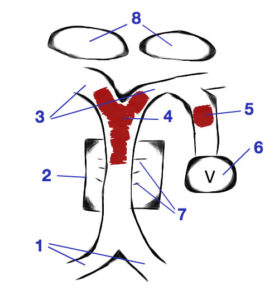

These notes were handwritten in a notebook and transcribed here. They were meant to be private notes, so please forgive any personal or emotional references. Everything was written from my point-of-view and therefore includes only my personal observations, views and opinions. I have also abbreviated names outside of the immediate family to single initials to preserve their identities.
Kim got a call from R. Apparently M from Sue’s shop called her. Sue did not show up and was not answering her phone. I was home (even though I was supposed to be in the office) because I wanted to prep and pack for our spring break trip leaving early the next morning (Friday). We were planning on flying out to St. Louis, Memphis, and Nashville and bring along our daughter’s friend, A.
Kim tried calling Sue but got no answer on either her home phone or her cell phone. Next, she called H (Sue’s neighbor), and asked her to check in on Sue. Unfortunately, Sue had forgotten her keys recently and used the set she loaned to H for emergencies, so H did not have keys for Sue’s house. (H was at work, but her husband was home.) I started getting ready to leave as the next step was obvious – we needed to get to Sue’s house to find out what was going on.
I grabbed my lock pick set and a bag of tools to break in just in case and we took off. The weather was *terrible* due to storms (Samantha’s school actually took cover in the halls) and it took us over an hour to get to Sue’s house – almost having an accident due to hydroplaning while on the way.
Kim made a series of phone calls – her sister, Cyndie, at the top of the list – but also the beauty salon where Sue worked, her gym to find out if she was there or the last time she checked in (which was Wednesday at 11:20AM), H, and the police.
At one point, the cops used H’s phone to call Kim and discussed options. Struggling to make sense of everything, we decided the only non-frightening option was that maybe she had gone for a walk in the park near her house and forgot to take her phone. The cops wanted to then go check out the park, but we were adamant that they break into her house first and then go check the park afterwards. They were afraid that they did not have justification to break in, but Kim made it clear that we were going to break in when we arrived anyway.
When we pulled up, the police and fire department were there. We parked in the street and ran to her house in the rain. Right as we arrived they broke through her front window and gained access to the house. The police went in first to secure the place (just in case), followed by the fire rescue crew. (Kim said later that hearing the sound of breaking glass and watching everyone rush in was one of the most terrifying things she ever saw.) We were stopped from going in until the area was secure, but went in as soon as they let us. Once inside, we huddled out of the way in the corner of her living room waiting on the news. A policeman came over to us and told us, “We found her. She is upstairs. She is alive and breathing.” That was it. “Alive and breathing.” Not “ok”, not “conscious”, just “alive and breathing”. Kim broke into hysterics of pain and longing like I have never seen, and I was left hollow and empty – unsure if I was relieved, terrified, sad, or distraught. That moment lasted a lifetime, and then Kim gathered enough composure to ask me to call Cyndie and update her with the news.
Cyndie was in Orlando, FL working with the Tonight Show for a new ride at Universal. Wade had flown down to join her and they were planning on leaving from there to go to Costa Rica on Friday. I called her and told her what I had been told, and tried to say it in the most upbeat and positive manner possible. The line went so silent that I thought we had been disconnected. Seconds later, Wade came on the line. With a physically demanding week already behind her, the news brought Cyndie to a complete emotional breakdown as well. I told Wade I would call with any updates and hung up.
The medical folks started asking us questions that we should have known the answers to and didn’t – her prescriptions, medications, primary doctor, last visit, and on and on. While we were trying to answer them and gather up things from the house that we may need – insurance card, prescription pill bottles, address book, cell phone – they brought Sue down on the stretcher and took her out to the ambulance. Kim saw her as she went by, and Sue says now that she remembers seeing Kim when she was being carried out. Sue was pale and glossy-eyed, but she was awake and they were talking to her.
H was a blessing, offering to take care of the house and board up the window while we raced to the hospital to catch up with Sue. We arrived and were stuck in the ER waiting room as they prepped Sue. Then we were moved to a different waiting room and did more waiting. Finally a doctor came in, we will call him Dr. A, and told us the situation.
Sue had a stroke caused by a clot in her brain stem. He explained that because of the location of the clot, she likely went unconscious suddenly without any real symptoms, unlike other strokes. He told us the surgery to remove the clot was fairly simple and very successful – going up through an artery in the groin to the location of the clot in the brain and just sucking it out with a tube. Without the surgery, she had less than a 1% chance of survival, but even with a successful surgery the real question was what her state would be afterwards. How much damage has been done? A lot of that depends on how long the clot was in place and how much damage it did while it was there. He briefed us that we would need to talk after the surgery about her quality of life, and whether or not it would be worth it to bring her out of the anesthetic if her recovery options were limited. He told us that the doctor performing the surgery would be coming in to get a consent form signed, and that it would have to happen fast because time was of the essence.
As he said, the surgeon, Dr. P, stopped in shortly thereafter and he reiterated what Dr. A told us. He said that it would take a little while (maybe 20-30 minutes) to get her prepped and ready, and then the surgery would only take 20-30 minutes as well. We signed the form, he left, and we waited.
While we waited, we called several people and updated them on the status. We spoke with Cyndie several times, and she and Wade made travel arrangements to head to town as soon as possible. After two hours, we started roaming the halls looking for someone to tell us what was going on. A desk clerk let us know that we were “forgotten” – not what you want to hear. He took us to another person who gave us directions to the ICU, and after a while of being lost and losing my temper at a poor desk clerk, someone finally got us to Sue’s room.
We arrived just in time to see them perform her first status check. She was intubated to help her breathe and protect her airway, had several IVs, EKG hookups, a catheter, and compression sleeves on her legs. They had her on pain meds (Fentanyl) and sleeping drugs (Propofol – what Kim refers to as the “MJ juice”, much to the dismay of the medical staff here). They decreased her dose of the MJ so that she would wake up a bit, and then asked her a series of questions. They asked her to open her eyes, but everything took a 10-15 second delay. She finally did it, and then they asked her to squeeze their hand, then give a thumbs up, and then wiggle her toes. She could do everything they asked with her right side, but had no ability to move anything on her left side.
Dr. A was there and talked to us about the clot. Apparently they were able to get most of it out, which was good. He drew us this picture and gave us the following explanation:

You have a bunch of arteries that come together (1) and go through the brain stem (2) and then split off into more arteries (3). The clot (4) was in the brain stem and partially into multiple arteries, but they got almost all of it except for a small piece that was farther down (5). The concern with that piece was that it was partially blocking the artery supporting the area of the brain responsible for vision (6). Another concern was all of the little tributaries that led off of the main artery going through the brain stem (7) and if any of them were blocked or damaged. He also said that there were two very important sections of the brain (8) that were of concern, but he felt that they were not compromised. (I don’t remember their names or what they do.)
So it was 6:00PM, and here is the situation at that point: we (Kim and Chad) were in the room with Sue, Cyndie and Wade were on a plane en route to here and would be landing at 7:30, Samantha was at her friend A’s house (still under the impression that we were leaving in 12 hours to go on spring break), and very few other people were even aware of what had happened.
Kim started making calls, and I headed home to talk to Samantha and pick up Cyndie and Wade. I made it home a little before 7:00PM and had a good talk (and some tears) with Samantha, but the situation had improved so much since the morning that it was an easier conversation than I had thought it would be.
Cyndie and Wade arrived at 7:30PM and I caught them up on all of the news, surgery, results, status, and my loose understanding of what the next few hours/days/weeks would hold for us.
We took off and got to the hospital just before 8:30PM, and we all got to spend time with Sue. Only one person can spend the night at a time, so Kim stayed with her and the rest of us headed home after midnight.
That was the end of our first day in the ICU…
---end---